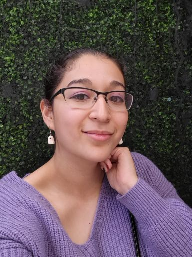

Welcome!

Profile
A university student who is striving to be in the field of animation. I work hard and have multiple softwares that I learned to use for the
past few years i've been in school. I heavily work with Maya and Adobe, as well as other software I toggled with for years. I can adapt
quickly and can be a teamplayer, i am willing to learn and work hard for this industry.
Skills
• Customer Service (4 years)
• Graphic Design (4 years)
• Cashiering (4 years)
• Adobe Photoshop (1 year)
• Photography (4 years)
• Adobe Premiere (2 years)
• Maya (2 years)
• Digital art (6 years)
• 2D animation (1 year)
• 3D animation (2 years)
• Video Editing (1 year)
Education
Central New Mexico Community College
Address: 900 University Blvd SE, Albuquerque, NM 87106
CNM Certificate
Will obtain Associate of fine arts fall 2021
University of New Mexico
Address: Albuquerque NM 87131-0001
Will obtain Bachelors of film and arts 2024